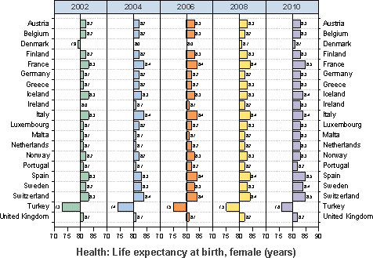

トレリスプロット
トレリスプロット

要求されるデータ
入力データとして最低1つY列が必要です。また、オプションとして、それぞれのY列に対応するYエラー列を待つことができます。他の列にはグループ化情報を含みます。
グラフ作成
グループ化プロットダイアログは次の3つの方法のうちの1つで開きます。
- メニューの作図> カテゴリカル： トレリスプロットを選択
- 2Dグラフギャラリーツールバーの
 ボタンをクリックします。
ボタンをクリックします。
開いたダイアログで、入力データ範囲を選択します。どちらかの方向に、最低でも1つのグループ列を追加し、カラーマップするデータの場所を指定します。これで、トレリスプロットを作成できます。
ダイアログの内容に関する詳細は、次のセクションを参照してください。
plot_group ダイアログボックス
| 入力
|
入力データを指定するのに使用します。
|
| グラフタイプ
|
トレリスプロットの種類を指定します。
|
| 二重Y軸
|
このボックスは通常のトレリスプロットには使用しません。二重Ｙトレリスプロットに関してはこちらのページを参照ください。
|
| 区分グラフの変数
|
このブランチで、グループ情報を指定します。各方向に表示ボックスと5つのボタン のついたツールバーがあります。 のついたツールバーがあります。
- 表示ボックス
- 追加ボタンで選択されたグループ範囲が表示されます。最初に選択されたグループ範囲で、第一カテゴリーとなり、プロットのグループ表の下部に表示され、2番目以降のグループは、その上に表示されます。
- 追加ボタン

- このボタンをクリックしてコンテキストメニューから1つの列選択します。あるい列の選択をクリックして列ブラウザを開き、表示ボックスにグループ化する範囲として表示します。最大5つのグループ範囲を追加できます。
- 削除ボタン

- 表示ボックスから選択したデータ範囲を削除します。このボタンはグループ列ボックスで1つ以上のデータ範囲を選択しているときに利用可能です。
- 上へ移動ボタン

- 表示ボックスで選択したデータ範囲を上に移動します。グループ順序を変更できます。
- 下へ移動ボタン

- 表示ボックスで選択したデータ範囲を下に移動します。グループ順序を変更できます。
- すべて選択ボタン

- グループ列のすべてのデータ範囲を選択します。
|
| ポイントに色を付ける変数
|
カラーマップするプロットに使う列を指定します。
|
| グラフテンプレート
|
グループ化グラフを作成するテンプレートを指定します。
|
テンプレート
grouped.otp (EXEフォルダにインストールされています。)
ノート
- トレリスプロットの作成と編集についての詳細はこのページをご覧ください。
- グループ化の範囲（上記のサンプルのX列の "Country Name"変数）をデフォルトのアルファベット順以外のものでソートするには、列を選択して右クリックし、カテゴリに設定を選択し、 カテゴリタブをクリックします。